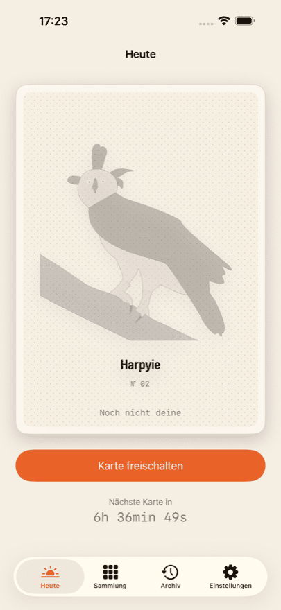
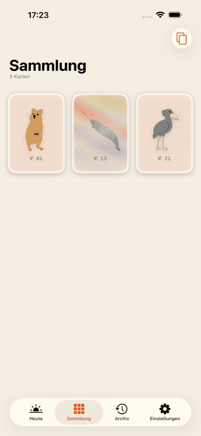
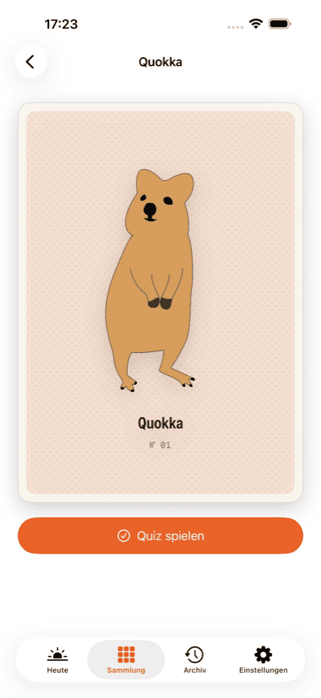
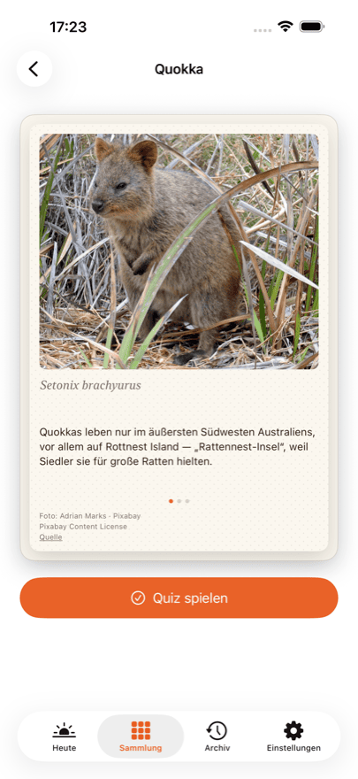
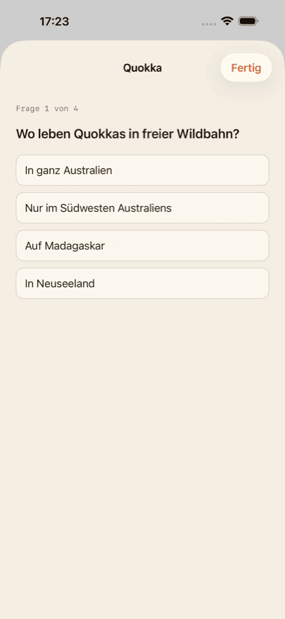

Daily Bestiary
Seltene Tierkarten sammeln






Was du bekommst
Eine Karte pro Tag
Eine, nie mehr. Die Karte des Tages wird aus deinem eigenen Startdatum berechnet, nicht aus einem Kalenderdatum — du fängst an, wann du willst.
Foto und drei Fakten
Jede Rückseite zeigt ein echtes Foto des Tieres, drei Fakten und den wissenschaftlichen Namen.
Ein Quiz je Tier
Vier Fragen zu jedem Tier, von einem Biologielehrer gegengelesen. Wiederholen geht immer.
Eine Sammlung, die wächst
Das Album zeigt nur deine eigenen Karten. Keine leeren Plätze, kein „x von y“, kein Wettlauf.
Holo-Karten
Einige Karten glänzen: Neige dein Telefon, und das Licht wandert über die Oberfläche.
Collector
Collector öffnet das Archiv: Ein verpasster Tag lässt sich nachholen. Die Karte des Tages ist jeden Tag enthalten, dazu kommt die Quiz-Statistik über die ganze Sammlung.
Collector ist ein Abonnement und verlängert sich, bis du es kündigst. Kündigen geht jederzeit in den Einstellungen deiner Apple-Account-Verwaltung. Die aktuellen Preise und Laufzeiten stehen im App Store, weil sie sich je nach Land unterscheiden.
Kein Konto, kein Feed, keine Werbung
Es gibt keine Anmeldung und keine Registrierung. Deine Sammlung liegt auf deinem Gerät und gleicht sich — wenn du in iCloud angemeldet bist — über deine eigene private iCloud zwischen deinen Geräten ab. Der Anbieter dieser App hat darauf keinen Zugriff.
Es gibt nichts zu scrollen und nichts zu grinden. Keine Werbung, keine Werbenetzwerke, kein Tracking über App-Grenzen hinweg. Für die Abwicklung der Käufe wird ein Dienstleister eingesetzt; was dabei übertragen wird, steht in der Datenschutzerklärung.
Bildnachweise
Die Zeichnungen auf den Kartenvorderseiten sind von Hand entstanden. Die Fotos auf den Rückseiten stammen aus freien Quellen — Pixabay, Unsplash und Wikimedia Commons.
Jedes Foto ist auf der Rückseite seiner eigenen Karte nachgewiesen, mit Urheber, Lizenz und Link zur Quelle. Nicht im Kleingedruckten, sondern dort, wo das Bild zu sehen ist.
Häufige Fragen
Was kostet Daily Bestiary?
Der Download ist kostenlos, und die ersten drei Karten gehen aufs Haus — mit Rückseite, Fakten und Quiz. Danach schaltest du die Karte des Tages einzeln frei, kaufst eine Zehnerkarte oder abonnierst Collector. Die aktuellen Preise stehen im App Store; sie unterscheiden sich je nach Land.
Brauche ich ein Benutzerkonto?
Nein. Es gibt keine Registrierung, keine Anmeldung und kein Profil. Die App fragt weder nach Namen noch nach E-Mail-Adresse.
Wie viele Karten gibt es insgesamt?
Das steht nirgends — weder in der App noch hier. Eine Gesamtzahl macht aus dem Sammeln eine Fortschrittsanzeige, und genau das soll es nicht sein. Wenn du alles hast, was es gibt, sagt die App es dir.
Was passiert, wenn ich einen Tag verpasse?
Die Karte dieses Tages ist nicht verloren. Mit Collector öffnet sich das Archiv, und du holst verpasste Tage nach. Ohne Collector geht es am nächsten Tag mit der nächsten Karte weiter.
Gleichen sich meine Karten zwischen iPhone und iPad ab?
Ja, sofern du auf beiden Geräten mit demselben Apple-Account in iCloud angemeldet bist. Der Abgleich läuft über deine private iCloud-Datenbank; der Anbieter der App kann sie nicht einsehen.
Ich habe die App neu installiert — sind meine Käufe weg?
Nein. In den Einstellungen der App und auf jeder Kaufseite gibt es „Käufe wiederherstellen“. Damit werden dein Abonnement und dein Guthaben deinem Apple-Account wieder zugeordnet. Deine Sammlung selbst kommt über iCloud zurück.
Wie kündige ich Collector?
Über Apple, nicht über die App: Einstellungen → dein Name → Abonnements. Dort lässt sich das Abonnement jederzeit zum Ende der laufenden Periode kündigen. Die App zeigt denselben Weg über das Customer Center in ihren Einstellungen.
Funktioniert die App ohne Internetverbindung?
Ja. Alle Karten, Fotos und Quizfragen sind in der App enthalten und werden nicht nachgeladen. Eine Verbindung braucht es nur für Käufe und für den iCloud-Abgleich.